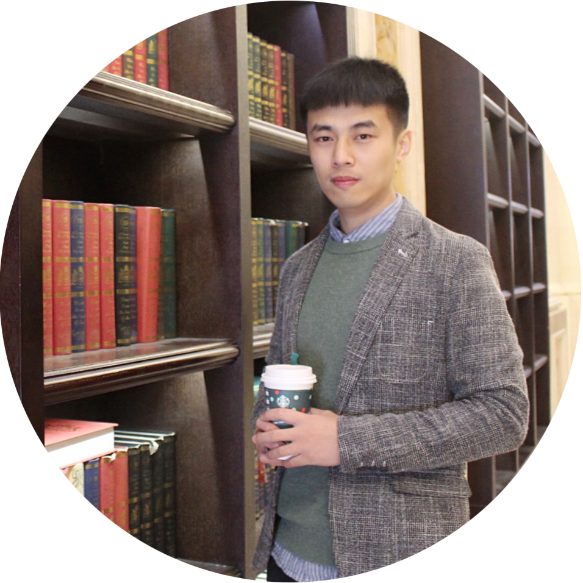

Ruwang Jiao (焦儒旺)

Research Fellow
Evolutionary Computation Research Group (ECRG)
School of Engineering and Computer Science (SECS)
Victoria University of Wellington (VUW)
Email: ruwangjiao(at)gmail.com
Address: Room CO351, School of Engineering and Computer Science, Victoria University of Wellington, PO Box 600, Wellington 6140, New Zealand
Research Interest
- Evolutionary optimization: constrained optimization, multi-objective optimization, Bayesian optimization
- Evolutionary learning: transfer learning, feature selection in classification
- Real-world applications: antenna deign, array synthesis
Selected Journal Papers
Full publication list: Google Scholar
, ResearchGate
, ORCID
- Ruwang Jiao, Bing Xue, Mengjie Zhang. Benefiting from single-objective feature selection to multi-objective feature selection: A multiform approach[J]. IEEE Transactions on Cybernetics, 2022, DOI: 10.1109/TCYB.2022.3218345.
- Ruwang Jiao, Bing Xue, Mengjie Zhang. Solving multiobjective feature selection problems in classification via problem reformulation and duplication handling[J]. IEEE Transactions on Evolutionary Computation, 2022, DOI: 10.1109/TEVC.2022.3215745.
- Ruwang Jiao, Bing Xue, Mengjie Zhang. A multiform optimization framework for constrained multiobjective optimization[J]. IEEE Transactions on Cybernetics, 2022, DOI: 10.1109/TCYB.2022.3178132. [CODE]
- Ruwang Jiao, Bing Xue, Mengjie Zhang. Investigating the correlation amongst the objective and constraints in Gaussian process-assisted highly-constrained expensive optimization[J]. IEEE Transactions on Evolutionary Computation, 2022, 26(5): 872-885.
- Ruwang Jiao, Sanyou Zeng, Changhe Li, Yew-Soon Ong. Two-type weight adjustments in MOEA/D for highly constrained many-objective optimization[J]. Information Sciences, 2021, 578: 592-614. [CODE]
- Ruwang Jiao, Sanyou Zeng, Changhe Li, Shengxiang Yang, Yew-Soon Ong. Handling constrained many-objective optimization problems via problem transformation[J]. IEEE Transactions on Cybernetics, 2021, 51(10): 4834-4847. [CODE] [Supplement]
- Qinghui Xu, Sanyou Zeng, Fei Zhao, Ruwang Jiao, Changhe Li. On Formulating and Designing Antenna Arrays by Evolutionary Algorithms[J]. IEEE Transactions on Antennas and Propagation, 2021, 69(2):1118-1129.
- Ruwang Jiao, Sanyou Zeng, Changhe Li, Yuhong Jiang, Yaochu Jin. A complete expected improvement criterion for Gaussian process assisted highly constrained expensive optimization[J]. Information Sciences, 2019, 471C:80-96. [PDF] [CODE]
- Ruwang Jiao, Sanyou Zeng, Changhe Li. A feasible-ratio control technique for constrained optimization[J]. Information Sciences, 2019, 502C:201-217. [PDF] [CODE]
- Sanyou Zeng, Ruwang Jiao, Changhe Li, et al. Constrained optimisation by solving equivalent dynamic loosely-constrained multiobjective optimisation problem[J]. International Journal of Bio-Inspired Computation, 2019, 13(2): 86-101.
- Ruwang Jiao, Yongzhi Sun, Jianqing Sun, Yuhong Jiang, Sanyou Zeng.. Antenna design using dynamic multi-objective evolutionary algorithm[J]. IET Microwaves, Antennas & Propagation, 2018, 12(13): 2065-2072.
- Sanyou Zeng, Ruwang Jiao, Changhe Li, Xi Li, Jawdat S. Alkasassbeh. A general framework of dynamic constrained multiobjective evolutionary algorithms for constrained optimization[J]. IEEE Transactions on Cybernetics, 2017, 47(9): 2678-2688. [PDF] [Supplement] [CODE]
- Ruwang Jiao, Sanyou Zeng, Jawdat S. Alkasassbeh, Changhe Li. Dynamic multi-objective evolutionary algorithms for single-objective optimization[J]. Applied Soft Computing, 2017,61:793-805.
Selected Conference Papers
- Ruwang Jiao, Bing Xue, Mengjie Zhang. Handling different preferences between objectives for multi-objective feature selection in classification[C]. Australasian Joint Conference on Artificial Intelligence (AJCAI), 2022.
- Ruwang Jiao, Sanyou Zeng, Changhe Li, et al. Evolutionary constrained multi-objective optimization using NSGA-II with dynamic constraint handling[C]. IEEE Congress on Evolutionary Computation (CEC). IEEE, 2019: 1634-1641.
- Ruwang Jiao, Sanyou Zeng, Changhe Li, et al. Expected improvement of constraint violation for expensive constrained optimization[C]. Proceedings of the Genetic and Evolutionary Computation Conference (GECCO). ACM, 2018: 1039-1046.
- Ruwang Jiao, Sanyou Zeng, Changhe Li, et al. Dynamic constrained multi-objective evolutionary algorithms with a novel selection strategy for constrained optimization[C]. Proceedings of the Genetic and Evolutionary Computation Conference Companion (GECCO). ACM, 2018: 213-214.